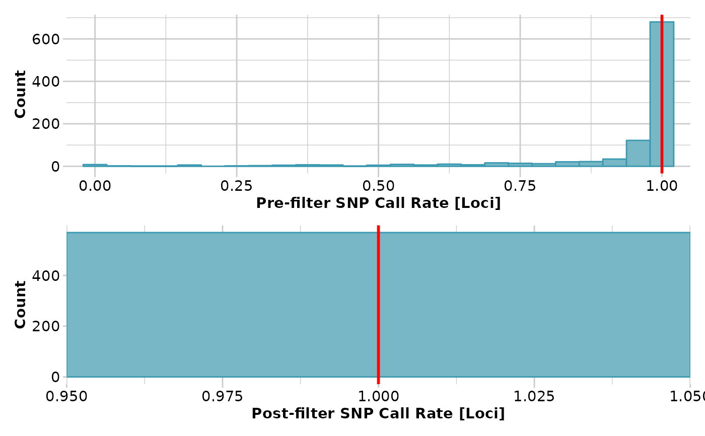
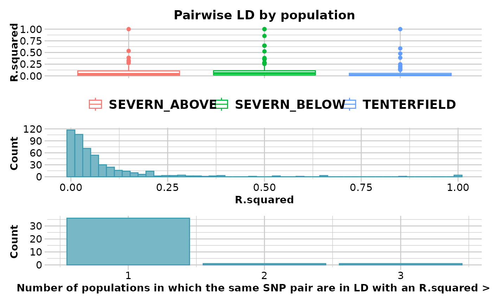
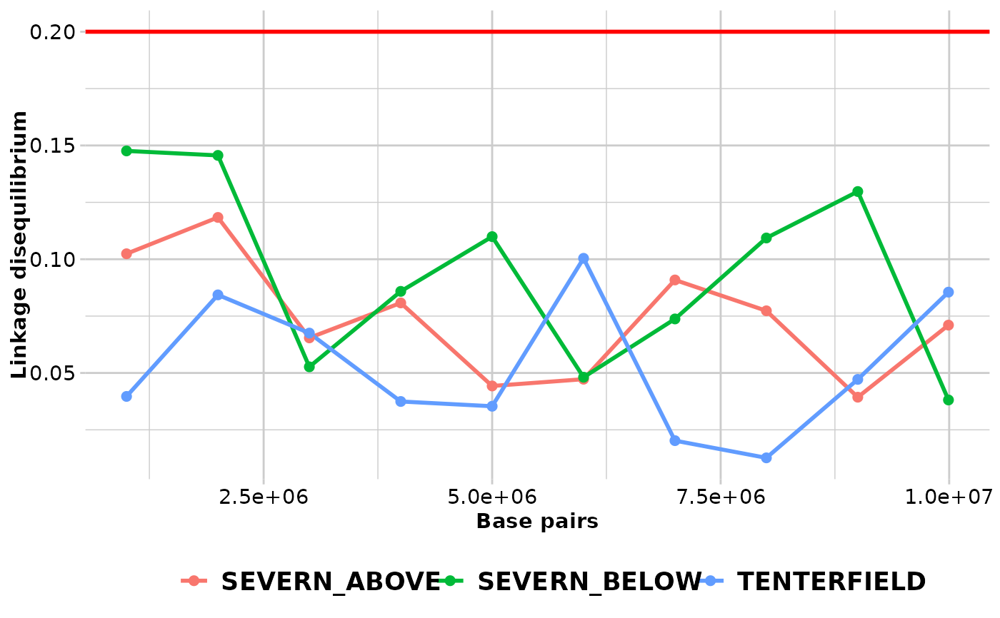

Plots linkage disequilibrium against distance by population disequilibrium patterns
Source:R/gl.ld.distance.r
gl.ld.distance.RdThe function creates a plot showing the pairwise LD measure against distance in number of base pairs pooled over all the chromosomes and a red line representing the threshold (R.squared = 0.2) that is commonly used to imply that two loci are unlinked (Delourme et al., 2013; Li et al., 2014).
Usage
gl.ld.distance(
ld_report,
ld_resolution = 1e+05,
pop_colors = NULL,
plot_theme = NULL,
plot.out = TRUE,
save2tmp = FALSE,
verbose = NULL
)Arguments
- ld_report
Output from function
gl.report.ld.map[required].- ld_resolution
Resolution at which LD should be reported in number of base pairs [default NULL].
- pop_colors
A color palette for box plots by population or a list with as many colors as there are populations in the dataset [default NULL].
- plot_theme
User specified theme [default NULL].
- plot.out
Specify if plot is to be produced [default TRUE].
- save2tmp
If TRUE, saves any ggplots and listings to the session temporary directory (tempdir) [default FALSE].
- verbose
Verbosity: 0, silent or fatal errors; 1, begin and end; 2, progress log; 3, progress and results summary; 5, full report [default 2, unless specified using gl.set.verbosity].
References
Delourme, R., Falentin, C., Fomeju, B. F., Boillot, M., Lassalle, G., André, I., . . . Marty, A. (2013). High-density SNP-based genetic map development and linkage disequilibrium assessment in Brassica napusL. BMC genomics, 14(1), 120.
Li, X., Han, Y., Wei, Y., Acharya, A., Farmer, A. D., Ho, J., . . . Brummer, E. C. (2014). Development of an alfalfa SNP array and its use to evaluate patterns of population structure and linkage disequilibrium. PLoS One, 9(1), e84329.
See also
Other ld functions:
gl.ld.haplotype()
Author
Custodian: Luis Mijangos – Post to https://groups.google.com/d/forum/dartr
Examples
if ((requireNamespace("snpStats", quietly = TRUE)) & (requireNamespace("fields", quietly = TRUE))) {
require("dartR.data")
x <- platypus.gl
x <- gl.filter.callrate(x,threshold = 1)
x <- gl.filter.monomorphs(x)
x$position <- x$other$loc.metrics$ChromPos_Platypus_Chrom_NCBIv1
x$chromosome <- as.factor(x$other$loc.metrics$Chrom_Platypus_Chrom_NCBIv1)
ld_res <- gl.report.ld.map(x,ld_max_pairwise = 10000000)
ld_res_2 <- gl.ld.distance(ld_res,ld_resolution= 1000000)
}
#> Starting gl.filter.callrate
#> Processing genlight object with SNP data
#> Warning: data include loci that are scored NA across all individuals.
#> Consider filtering using gl <- gl.filter.allna(gl)
#> Warning: Data may include monomorphic loci in call rate
#> calculations for filtering
#> Recalculating Call Rate
#> Removing loci based on Call Rate, threshold = 1
#>

#> Completed: gl.filter.callrate
#> Starting gl.filter.monomorphs
#> Processing genlight object with SNP data
#> Identifying monomorphic loci
#> Removing monomorphic loci and loci with all missing
#> data
#> Completed: gl.filter.monomorphs
#> Starting gl.report.ld.map
#> Processing genlight object with SNP data
#> Calculating pairwise LD in population SEVERN_ABOVE
#> Calculating pairwise LD in population SEVERN_BELOW
#> Calculating pairwise LD in population TENTERFIELD
#>

#> Completed: gl.report.ld.map
#> Starting gl.ld.distance
#>

#> pop distance ld_stat
#> <fctr> <num> <num>
#> SEVERN_ABOVE 1000001 0.10239933
#> SEVERN_ABOVE 2000001 0.11837328
#> SEVERN_ABOVE 3000001 0.06542061
#> SEVERN_ABOVE 4000001 0.08078629
#> SEVERN_ABOVE 5000001 0.04427707
#> SEVERN_ABOVE 6000001 0.04725646
#> SEVERN_ABOVE 7000001 0.09087990
#> SEVERN_ABOVE 8000001 0.07732017
#> SEVERN_ABOVE 9000001 0.03934305
#> SEVERN_ABOVE 9992140 0.07103110
#> SEVERN_BELOW 1000001 0.14760863
#> SEVERN_BELOW 2000001 0.14563835
#> SEVERN_BELOW 3000001 0.05268563
#> SEVERN_BELOW 4000001 0.08586598
#> SEVERN_BELOW 5000001 0.10992954
#> SEVERN_BELOW 6000001 0.04812035
#> SEVERN_BELOW 7000001 0.07374916
#> SEVERN_BELOW 8000001 0.10933380
#> SEVERN_BELOW 9000001 0.12975825
#> SEVERN_BELOW 9992140 0.03812468
#> TENTERFIELD 1000001 0.03968855
#> TENTERFIELD 2000001 0.08432615
#> TENTERFIELD 3000001 0.06752635
#> TENTERFIELD 4000001 0.03745991
#> TENTERFIELD 5000001 0.03536964
#> TENTERFIELD 6000001 0.10039732
#> TENTERFIELD 7000001 0.02024599
#> TENTERFIELD 8000001 0.01268421
#> TENTERFIELD 9000001 0.04717859
#> TENTERFIELD 9992140 0.08552747
#> pop distance ld_stat
#> Completed: gl.ld.distance
#>